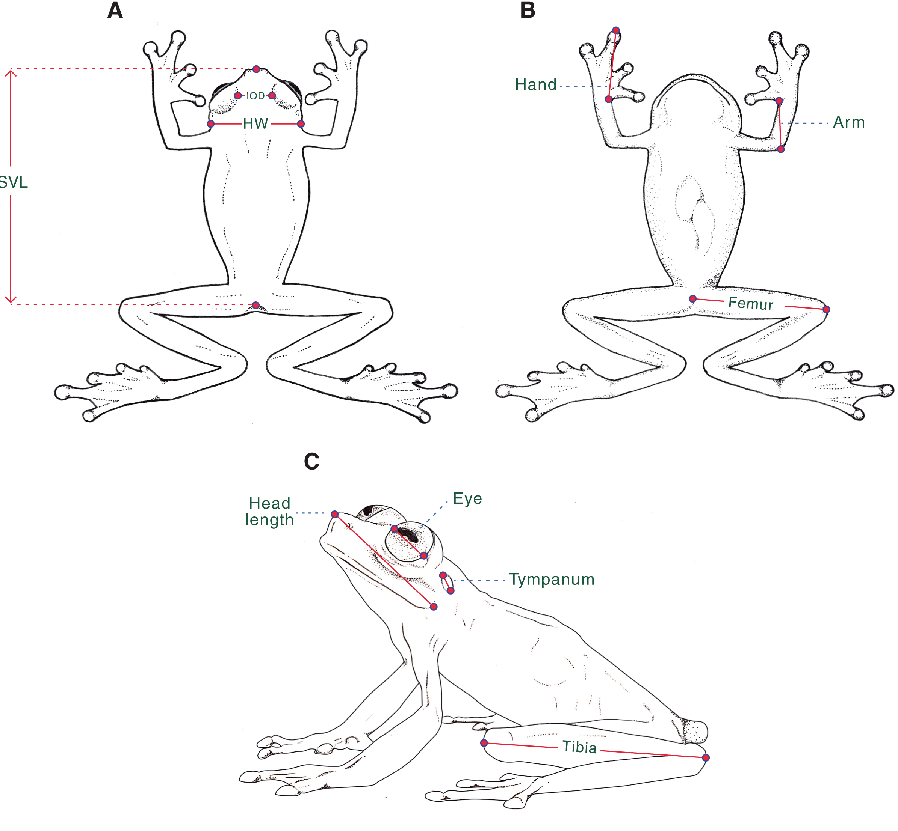
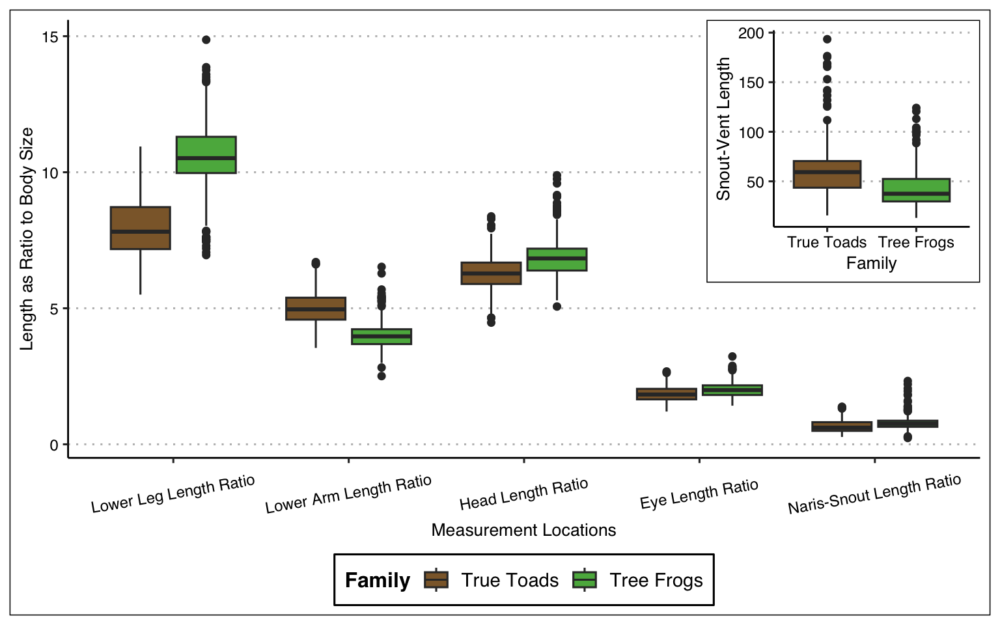
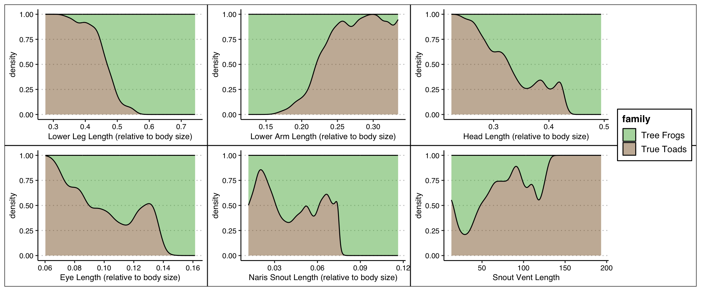
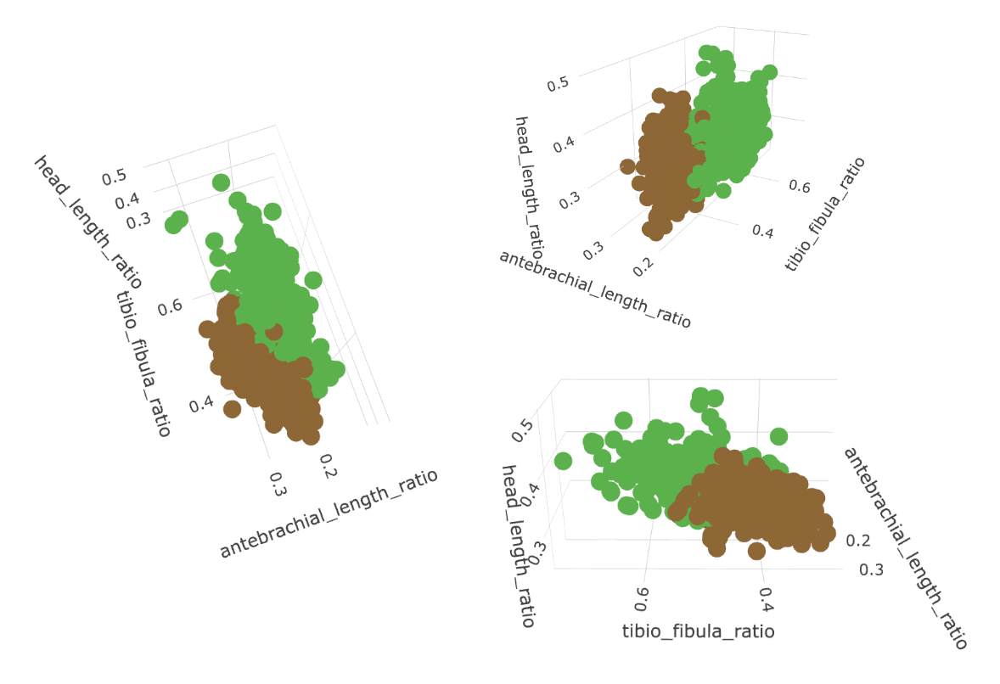

| Measurement | Description |
|---|---|
| Lower Leg Length | The length of the tibia and fibula, measured from the heel to the proximal edge of the knee |
| Lower Arm Length | Measured from the wrist to the proximal end of the elbow |
| Head Length | Measured from the jaw joint to the tip of the snout |
| Eye Length | Measured from the anterior corned to the posterior corner of the eyelids |
| Naris-Snout Length | Measured from the Anterior edge of the naris to the edge of the snout on the same side of the body |
| X Length Ratio | X Variable above was divided by Snout-Vent Length (below) to remove size colinearity bias |
| Snout-Vent Length | Measured from the tip of the snout to vent |
| Family | Hylidae: Tree Frogs and their allies, Bufonidae: True Toads |
Frog vs Toad Identification
Introduction
In order to identify unique species, researchers will often use a variety of methods, including size, color, behavior, and sound. Size measurements can be especially important when a specimen is visually difficult to differentiate from other species or deceased. Identification of species is crucial for conservation, as different species and families will require a unique habitat for their lifestyle and simply put, we cannot even begin to try and conserve a species if we don’t know what they are. Frog populations have been declining for decades (Wake, 1991), often even without a specific known cause. Utilizing body measurements of previously deceased frog specimens we seek to build a model that can identify a species based off a handful of measurements. Body size measurements are also known to be associated with niche partioning in a variety of other animals, and a body size based model could help explore which body parts are notably different between families.
We chose to explore 2 frogs families colloquially known to contain vastly different physical characteristics and habitats: Hylidae (tree frogs) and Bufonidae (true toads). Frogs in the family of Hylidae are known to live up in the trees of forested environments, though some live in ponds and swamps. They are known to be long and skinny, and have distinct toe pads that assist with climbing and strong legs for jumping among the trees (AmphibiaWeb). Frogs in the family of Bufonidae are typically known to be terrestrial/ground dwelling, they dig burrows and prefer moist shady environments. (Bufonidae).
Both families have been studied extensively as focuses of work in conservation, and are known to use their habitats very specifically. Sanchez et. al (2010) found that the micro-habitats of Rhinella fernandezae (a species in the Bufonidae family) are not randomly chosen, but a highly specific combination of soil hardness and broad leaf plant cover. The choice of soil hardness is especially linked to their tendancy for burrowing. Paris (2000) found that the number of Litoria pearsoniana (a species in the Hylidae family) were highly correlated with the size of the local stream and presence of palm trees, the latter of which is a limiting factor which is actively threatened by forest clear cutting for cattle grazing. These papers show that even small changes to an environment can have massive effects on the number of species in an area.

Materials and Methods
These data were collected by researchers at the University of Michigan Museum of Zoology (UMMS) Division of Reptiles and Amphibians, from specimens in their collection. The collection includes 2600 individual specimens that contain 757 different species from 52 different families. The frogs were measured in millimeters using digital calipers to determine length and width of each body parts. Each row represents a unique frog and only adult frogs were measured. Some species are represented as many as 9 times, though many individuals have only 5 or less observations, with this in mind we chose to represent the data on the family level.
To explore these data for our research question (below) we had to do some data manipulation to put it in a workable state. First, the data were filtered to just include Hylidae and Bufonidae families and any NA’s were removed, which lowered the data to 898 full rows. Families were also renamed to their common names, while Hylidae is technically a family of Tree frogs and their allies, we just chose to name them tree frogs for ease of understandability. Then, to remove size based colinearity all variables were divided by SVL; as a result, all explanatory variables in the project are described as “relative to body size”, and unit-less. For our logistic tests, we also multiplied the explanatory variables by 20 to display them as a 5% ratio to body size, to account for small ratio values. Summary statitics are a median (to account for high amount of outliers) with standard deviation to define spread. Lastly, we used this data to identify an optimal generalized logistic model using a stepwise analysis in both directions, which uses a two-sided p-value.
Results
| family | n | Percent |
|---|---|---|
| Tree Frogs | 536 | 59.7 |
| True Toads | 362 | 40.3 |
| Measurements | Median | Std. Dev. | Median | Std. Dev. |
|---|---|---|---|---|
| Tibio Fibula Length | 23.5 | 10.3 | 19.5 | 9.6 |
| Antebrachial Length | 15.0 | 6.3 | 7.6 | 3.4 |
| Head Length | 18.8 | 8.8 | 12.9 | 6.3 |
| Eye Length | 5.4 | 2.5 | 3.8 | 1.6 |
| Naris Snout Length | 1.7 | 1.0 | 1.4 | 0.7 |
| Snout-Vent Length | 59.3 | 27.5 | 37.5 | 17.5 |
| Head Width | 20.2 | 11.1 | 12.0 | 6.2 |
| Femur Length | 22.8 | 10.9 | 18.0 | 9.1 |
| Inter-Oribital Length | 8.1 | 4.6 | 6.6 | 3.8 |
| Inter-Narial Distance | 2.4 | 1.9 | 2.3 | 1.3 |
| Eye Naris Length Length | 3.9 | 1.9 | 3.4 | 2.2 |
Table 3 defines the summary of all variables that were looked at in the dataset. The first 6 rows are those identified as useful to the model by the stepwise analysis, in order of importance. The remaining 5 variables were marked as not statistically significant to the model. Though not a rule, variables whose SD is less than half of the median are more significant, and those where the SD is over half of the median are less or in-significant.
| Measurements | Median | Std. Dev. | Median | Std. Dev. |
|---|---|---|---|---|
| Tibio Fibula Length Ratio | 0.391 | 0.053 | 0.526 | 0.056 |
| Antebrachial Length Ratio | 0.248 | 0.031 | 0.198 | 0.024 |
| Head Length Ratio | 0.314 | 0.034 | 0.342 | 0.034 |
| Eye Length Ratio | 0.092 | 0.014 | 0.100 | 0.013 |
| Naris Snout Length Ratio | 0.031 | 0.011 | 0.038 | 0.012 |
| Head Width Ratio | 0.342 | 0.043 | 0.315 | 0.039 |
| Femur Length Ratio | 0.389 | 0.057 | 0.473 | 0.057 |
| Inter-Oribital Length Ratio | 0.143 | 0.022 | 0.181 | 0.031 |
| Inter-Narial Distance Ratio | 0.042 | 0.018 | 0.064 | 0.018 |
| Eye Naris Length Length Ratio | 0.068 | 0.012 | 0.090 | 0.019 |
Table 4 displays all variables divided by svl as a ratio of body size. These numbers are decimals and unitless, and represent a similar trend to the un-ratioed variables.


There are noticable differences between the families on an individual variable basis for all 6 measurements (Fig 1 + 2). The ratios of lower leg length and lower arm length especially, show clear distinctions between the two groups in both the boxplots and density curves. The ratio of head length shows a similar density plot to Eye length, though its more widely spread boxplot differentiates it. The ratios of eye length and naris-snout length show density plots that are not nearly as clean, and boxplots with medians that are very close together, explaining why they are less useful to the model. Lastly, though SVL displays a large difference in its scatterplot, the density plot shows that the variable is not as clear cut as one might assume.

There is a clear distinction between the two family groups (Fig. 4)
| Variable | Estimate | Standard Error | Z-value | P-value |
|---|---|---|---|---|
| (Intercept) | -3.715 | 3.21 | -1.16 | 0.248 |
Lower Leg Length Ratio |
3.075 | 0.42 | 7.37 | 0.000 |
Lower Arm Length Ratio |
-6.562 | 0.83 | -7.94 | 0.000 |
Head Length Ratio |
2.398 | 0.52 | 4.57 | 0.000 |
Eye Length Ratio |
-2.452 | 1.09 | -2.26 | 0.024 |
Naris-Snout Length Ratio |
-4.021 | 1.55 | -2.60 | 0.009 |
Snout-Vent Length |
-0.038 | 0.02 | -2.23 | 0.026 |
Model Interpretations:
Intercept: odds of being a tree frog when body ratios of Lower Leg Length, Lower Arm Length, Head Length, Eye Length, Naris-Snout Length, Snout-Vent Length are 0 are 0.024:1.
Lower Leg Length Ratio: When all other variables are held constant, for every 0.05 increase in lower leg length with respect to body size, the odds of being a tree frog change by 21.64 times.
Lower Arm Length Ratio: When all other variables are held constant, for every 0.05 increase in lower arm length with respect to body size, the odds of being a tree frog change by 0.001 times.
Head Length Ratio: When all other variables are held constant, for every 0.05 increase in head length with respect to body size, the odds of being a tree frog change by 11.00 times.
Eye Length Ratio: When all other variables are held constant, for every 0.05 increase in eye length with respect to body size, the odds of being a tree frog change by 0.086 times.
Naris-Snout Length Ratio: When all other variables are held constant, for every 0.05 increase in naris-snout length with respect to body size the odds of being a tree frog change by 0.017 times.
Snout-Vent Length: When all other variables are held constant, for every 1.0 increase in snout-vent length by 1 millimeter, the odds of being a tree frog change by 0.96 times
Discussion
Our goal of this project was to find the best morphological traits of the order Anura to predict if a specimen would be a true toad or a tree frog. From this statistical analysis we found that the best way to predict a frog or a toad is by using 6 measurements: Body Size Ratios of lower leg length, lower arm length, head length, eye length naris-snout length, and an unratioed Snout-Vent Length. It is important to note that the first 3 variables: lower leg length, lower arm length and head length, are by far more important to the model than the last 3. Each of these three variables lowered the overal AIC (variability explained by the model) by many hundreds, wheras the addition of the latter 3 variables only lowered the AIC by a cumulative of 16.
Interestingly, though it would seem that having longer eye length or naris snout length, with respect to body size, would raise the odds of being a tree frog (Figs. 2 + 3), the model displays the opposite, as the length increases the odds of being a tree frog is smaller. This is likely due to the minimial variability in these variables, and the way they interact with the other variables in the full model. If you have a full specimen we reccomend trying to use all 6 variables, but in a pinch, the measurements of lower leg, lower arm, and head length relative to body size will suffice.
Though we used a step-wise exploratory method for arriving on our model, rather than testing specific variables of interest, the fact that measurements of lower leg length and lower arm length make a lot of sense in the context of the data. As discussed earlier, one of the most unique features to the tree frogs are their strong jumping legs. The fact that the odds of being a tree frog change by 21.64 times for every .05 increase in relative lower leg length strongly affirms the claim by Paris (2000). Our model also stated that the odds of being a tree frog change by .001 times for every .05 increase in lower arm length as a ratio to body size. This means that the trait of longer lower arms is highly specialized to toads, which strongly corroborates the connection made by Sanchez et. al (2010) of soil hardness and burrowing habits, and is a clear distinction between the two families.
One potential confounding variable to our data is that we do not know how these specimens were stored. The authors did not clairfy if specimins were stored in jars or as skeletons, this difference could warp measurements due to layers of skin and muscle, especially in smaller variables, such as naris-snout length. Furthermore, preserved specemins are known to shrink over time, despite the best preservation techniques, specimins of different ages could have shrunken or become deformed at different rates, warping them from their ‘true’ measurement, adding extra variability to the dataset.
This model can be generalized to identify frogs that fall in the family of Hylidae or Bufonidae, which limits its ability to identify an unknown frog specemin, though if it is known to fall into one of those two families, it could be especially useful then. More complex models could also be made to narrow down a frog from a wider selction of families or species. The source of the data library of specemins is proudly boasted to be ‘world wide’ though our spececific data is not connected to a location, so it is hard to say where in the world we can generalize this data to. If we assume the sampling of species and locations is random though, it could be feasible to generalize it to any species within these two families around the world.
One of the motivations behind our research was the declining population of frogs, which is still vastly misunderstood. With this analysis, we have identified some clear defining characteristcs to make the identification of diceased frogs easier. Furthermore, our model found clear evidence of family wide nich partioning in Tree frogs and True Toads. Tree frogs lower legs are longer and specialized for jumping between trees, while true toads lower arms are longer and specialized for digging burrows on the forest floor. Thus this model could be used to aid the conservation of frogs in a 2 fold manor. First, a specimen could be identified by a series of body measurements, and then linked to a location and larger dataset. Secondly, by identifying which traits are important in these specimins, we can begin to look for problems that relate to their specialization, such as in deforestatin or soil quality. This analysis could be done via a hot spot analysis, where a subject of interest is identified and then algorithmically analyzed to reveal spatial trends correlated and shows evidence of a phenomenon happening with a confidence level.
Future logistic models should work to assess differentiations of other families, and potentially explore specimens on a species level.
Sources
AmphibiaWeb—Hylidae. (n.d.). Retrieved May 16, 2025, from https://amphibiaweb.org/lists/Hylidae.shtml
Andreas, M., Reiter, A., Cepáková, E., & Uhrin, M. (2013). Body size as an important factor determining trophic niche partitioning in three syntopic rhinolophid bat species. Biologia, 68(1), 170–175. https://doi.org/10.2478/s11756-012-0139-1
Bufonidae (bufonidés, Bufonids, crapauds, Toads). (n.d.). Animal Diversity Web. Retrieved May 16, 2025, from https://animaldiversity.org/accounts/Bufonidae/
Colloca, F., Carpentieri, P., Balestri, E., & Ardizzone, G. (2010). Food resource partitioning in a Mediterranean demersal fish assemblage: The effect of body size and niche width. Marine Biology, 157(3), 565–574. https://doi.org/10.1007/s00227-009-1342-7
Parris, K. M. (2001). Distribution, habitat requirements and conservation of the cascade treefrog (Litoria pearsoniana, Anura: Hylidae). Biological Conservation, 99(3), 285–292. https://doi.org/10.1016/S0006-3207(00)00194-4
Sanchez, L. C., Busch, M., & Madanes, N. (2010). Terrestrial habitat use by the burrowing toad, Rhinella fernandezae (Anura: Bufonidae). Folia Zoologica, 59(2), 122–128. https://doi.org/10.25225/fozo.v59.i2.a7.2010
Wake, D. B. (1991). Declining Amphibian Populations. Science, 253(5022), 860–860. https://doi.org/10.1126/science.253.5022.860